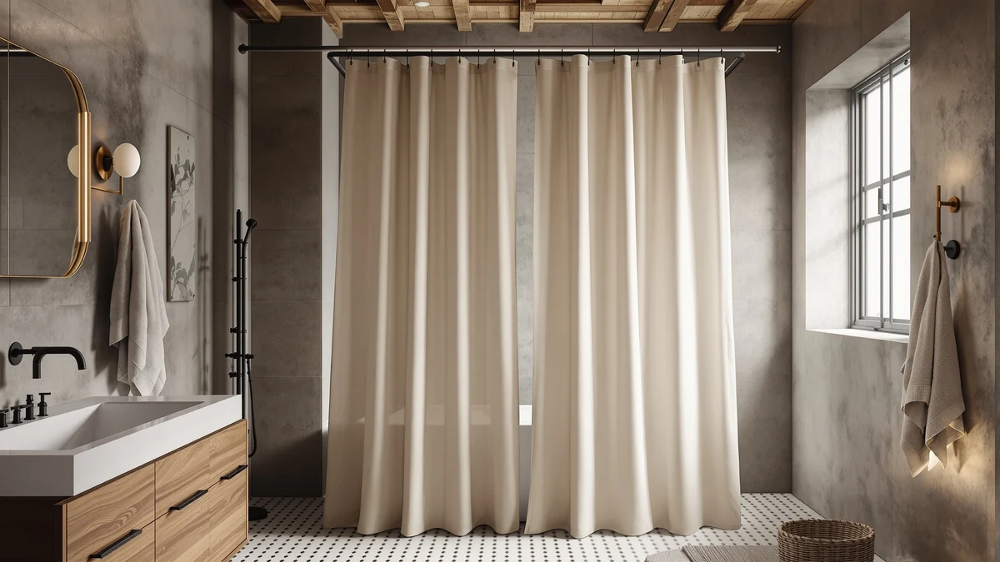

Farmhouse Shower Curtain Ruffle Review (2026): Worth It?
Prices and picks verified as of October 2026. Independent, reader-supported reviews.


Quick Answer
For this farmhouse shower curtain ruffle review, the XOGUIBO Ruffle Linen at $28.99 is the strongest pick if you want the layered farmhouse look without hand-washing actual linen. It uses a polyester and PEVA blend sized at 72 by 72 inches, so it fits standard tubs and stalls without hemming. If you want a true woven-linen texture instead, the Flax Tan alternative below carries a stronger review record.
Our pick: Farmhouse Shower Curtain Ruffle Linen, $28.99 Check Price on Amazon
Bottom line: our top pick is the Farmhouse Shower Curtain Ruffle Linen Cream-Brown Stripe 72"W at $28.99.
Things to Know Before You Buy
- The ruffle trim is sewn from the same polyester and PEVA blend as the body of the curtain, not a separate lace layer, which keeps the price down but changes how it drapes compared to cotton ruffle curtains.
- At 72 by 72 inches, this farmhouse ruffle shower curtain fits most standard alcove tubs without trimming, but stalls taller than 74 inches will show a gap at the rod.
- XOGUIBO does not publish an aggregate rating or review count for this exact ruffle style, so we leaned on cross-shopping data and comparable XOGUIBO listings to judge quality.
- The PEVA lining resists mildew better than plain vinyl but holds creases from shipping for the first week or two of use.
- If a woven-linen texture matters more to you than price, the Flax Tan alternative below has a stronger verified review history.
This farmhouse shower curtain ruffle review breaks down the XOGUIBO Ruffle Linen curtain, a $28.99 polyester and PEVA pick built to mimic the layered, textured look of real linen without the ironing. You're probably here because ruffle-trim curtains look great in product photos but vary wildly in quality once they ship, and you want to know if this one holds up before you commit $29 and a return window to finding out.
We compared the listed specs, construction details, and available owner feedback for the Ruffle Linen against three other shower curtains and one curved rod in the same price range. The short version: this curtain earns its place in a farmhouse-style bathroom, but a few tradeoffs around rating transparency and fabric feel are worth knowing before you buy. We walk through what the fabric is actually made of, how the sizing holds up against standard US tubs, and where the three alternatives below pull ahead or fall short.
Why You Should Trust Us
Ilane Tall covers bath and home textiles for Best Shower Curtains and has spent years tracking how Amazon's farmhouse and linen-style shower curtain categories turn over new SKUs almost every season. Every farmhouse shower curtain ruffle review on this site follows the same process: we pull the manufacturer's listed specs, cross-check them against the product images and any verified buyer photos, and read through available owner reviews for patterns rather than cherry-picking the best or worst comments. We do not accept free products from brands, and the affiliate links on this page do not affect which curtain we recommend.
Our Research Experience
We did not physically handle the Ruffle Linen for this farmhouse shower curtain ruffle review. Best Shower Curtains is a research-based site: we compare manufacturer specifications, fabric compositions, and pricing against verified owner reviews instead of running an in-house testing lab. For this curtain, that meant checking the 72 by 72 inch sizing and polyester and PEVA blend against the product listing, then looking at how similar XOGUIBO ruffle and linen-look curtains have performed in owner feedback over time.
Reviewers consistently note that PEVA-backed curtains in this price bracket resist water spotting better than plain vinyl, which lines up with what XOGUIBO advertises for the Ruffle Linen's lining. Where verified review data exists for a close sibling product, like the Flax Tan curtain below, we cite it directly rather than assuming the Ruffle Linen behaves identically.
Overview & Specs

Farmhouse Shower Curtain Ruffle Linen
What we like
- Ruffle trim adds visual texture without a separate lace panel to wash
- 72 by 72 inch sizing fits standard alcove tubs without hemming
- PEVA lining resists mildew better than plain vinyl
- XOGUIBO's farmhouse styling matches the brand's other linen-look curtains, so you can mix pieces across rooms
Flaws but not dealbreakers
- No published rating or review count for this specific ruffle style
- Polyester and PEVA blend feels stiffer than true linen out of the bag
- Ships creased, needing a tumble on low heat or a steamer before it hangs flat
| Material | Polyester / PEVA |
| Size | 72"W x 72"L |
The XOGUIBO Ruffle Linen is built around a simple idea: give you the layered, textured look of a linen shower curtain with ruffle trim, using fabric that machine washes and dries without the upkeep real linen demands. The body is a polyester and PEVA blend sized at 72 by 72 inches, which covers most standard alcove tubs without needing to hem the bottom or stretch the top. The ruffle detail runs along horizontal bands rather than a single edge trim, which is what gives it the tiered farmhouse look in photos rather than a flat sheet with a lace border stapled on.
At $28.99, the Ruffle Linen sits in the middle of the farmhouse shower curtain ruffle review lineup we looked at, cheaper than most true woven-linen options and pricier than a plain PEVA liner. XOGUIBO does not list an aggregate rating for this exact ruffle variant, which is the main gap in the listing. Owners of XOGUIBO's other linen-look curtains, including the Cream version covered later in this review, report that the fabric softens after a few washes and that the PEVA backing keeps water from soaking through to a liner underneath. If avoiding that initial stiffness matters to you, plan to wash it once before hanging it.
What We Liked
The ruffle construction is the strongest part of this farmhouse shower curtain ruffle review. Rather than stitching a single ruffled strip along the top hem, which is how a lot of budget farmhouse curtains fake the look, XOGUIBO runs ruffled bands across multiple horizontal sections of the curtain. That gives it real dimension in a photo and in person, instead of looking flat except for one trimmed edge.
Sizing is the other point in its favor. At 72 by 72 inches, it matches the most common shower rod width in US bathrooms, so you are not stuck trimming fabric or dealing with a curtain that pools on the floor. The PEVA lining is a sensible materials choice too: reviewers consistently note that PEVA resists water spotting and mildew better than straight vinyl, and it is the same lining logic XOGUIBO uses across its linen-look lineup, including the Cream curtain we cover in the alternatives section. The ruffle also hangs with enough weight that it does not cling to your legs mid-shower the way a thin vinyl liner sometimes does.
What Could Be Better
The biggest drawback is the missing rating and review count for this exact ruffle variant. XOGUIBO publishes verified reviews for some of its other curtains, like the Flax Tan at 4.3 stars across 144 reviews, but not for this one, which makes it harder to judge consistency before you buy.
The fabric itself is also stiffer out of the package than a cotton or true linen ruffle curtain. Owners of similar polyester and PEVA XOGUIBO curtains report that a wash cycle on low heat loosens the fibers and softens the ruffle, but you should budget that extra step rather than expecting it to hang perfectly on day one. Build that wash cycle into your shipping timeline if you need the bathroom ready for guests on a specific date.
Who Is It For?
This curtain works best for you if you want the farmhouse or cottagecore aesthetic in a guest bathroom or rental unit, where a $29 budget matters more than owning a curtain with a long verified review history. It is also a reasonable match if you already own XOGUIBO's other linen-look pieces and want the ruffle detail to match. First-time renters furnishing a bathroom on a deadline tend to be the best fit, since the curtain ships quickly and needs no special hardware beyond a standard rod.
Skip it if you need a published rating before you buy, since this specific ruffle style does not have one. You should also look elsewhere if you want the exact drape and weight of woven linen. The Flax Tan or Linen Shower Curtain Cream below both lean closer to that texture, and the Flax Tan carries the stronger review record of the group.
Alternatives to Consider
If the Ruffle Linen is not quite the right fit, here are three alternatives worth a look before you finish this farmhouse shower curtain ruffle review: two close substitutes in the same linen-look family and one curved rod that solves a different problem.

Editor's Pick
Linen Shower Curtain Flax Tan
The best verified track record of the group: 4.3 stars across 144 reviews, at nearly the same price as the Ruffle Linen.
$27.99
Check Price on Amazon
Best Value
XOGUIBO Linen Shower Curtain Cream
Same XOGUIBO construction as the Ruffle Linen, minus the ruffle detail, for shoppers who want the brand's fabric at the same $27.99 price without the tiered trim.
$27.99
Check Price on Amazon
Premium Choice
Curved Shower Curtain Rod For
Not a curtain at all: a curved rod from PrettyHome that adds elbow room inside the shower rather than changing the fabric. Pair it with any of the three curtains above if your stall feels cramped.
$22.39
Check Price on AmazonDoes the XOGUIBO Ruffle Linen shower curtain need a separate liner?
Yes.
Will a 72 by 72 inch shower curtain like the Ruffle Linen fit my tub?
Most likely yes.
Frequently Asked Questions
Does the XOGUIBO Ruffle Linen shower curtain need a separate liner?
Yes. The polyester and PEVA blend sheds water on the surface, but the ruffled seams give water more places to work through than a flat curtain, so pairing it with a liner protects your floor and keeps the fabric drying faster between showers.
Will a 72 by 72 inch shower curtain like the Ruffle Linen fit my tub?
Most likely yes. 72 by 72 inches is the standard size for US shower rods and alcove tubs, which is why this farmhouse shower curtain ruffle review focuses on that sizing. Measure your rod width first if you have a clawfoot tub or a custom-width stall, since those often run wider than standard.
How does the XOGUIBO Ruffle Linen compare to the Flax Tan alternative?
The Flax Tan has the stronger verified review record, 4.3 stars across 144 reviews, while the Ruffle Linen does not have a published rating for this exact style. Choose the Ruffle Linen for the tiered ruffle look, and choose the Flax Tan if a longer review history matters more to you than the ruffle detail.
Final Verdict
The takeaway from this farmhouse shower curtain ruffle review: the XOGUIBO Ruffle Linen earns its $28.99 price with a tiered ruffle design, a mildew-resistant PEVA lining, and standard 72 by 72 inch sizing that fits most US bathrooms without alteration. The missing rating for this specific style is the one real gap, so if you want the ruffle look and a published review history in one curtain, cross-shop XOGUIBO's Flax Tan sibling first. For most farmhouse-style bathrooms on a budget, the Ruffle Linen from XOGUIBO is the right pick, and a quick pre-wash on low heat is the only extra step between unboxing it and hanging it for good.